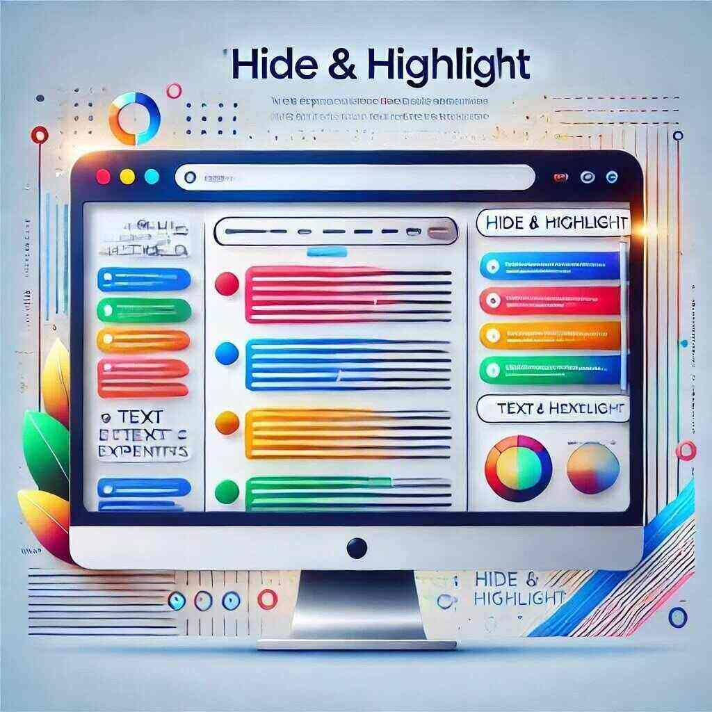

Знайомтесь з "Hide & Highlight"
"Hide & Highlight" - це інноваційне веб-розширення для Chrome та Firefox, яке дозволяє вам легко контролювати видимість тексту на веб-сторінках. З його допомогою ви можете приховувати або підсвічувати текстові ноди, що особливо корисно, коли ви хочете поділитися вмістом з іншими людьми, уникнувши розкриття конфіденційної інформації.
Ця функція стає особливо важливою в умовах, коли обсяг інформації, з якою ми стикаємося, постійно зростає. Ви можете легко налаштувати, які елементи тексту будуть видимі, а які - розмиті, завдяки чому ваші демонстрації стають більш ефективними.
Основні можливості розширення включають:
- Приховування тексту шляхом розмиття, що робить його нечитабельним.
- Підсвічування важливих частин тексту для кращої видимості.
- Легкий у використанні інтерфейс для швидкої настройки.
Використовуйте "Hide & Highlight" для підвищення ефективності ваших презентацій або обговорень. Якщо у вас є питання або пропозиції щодо розширення, залишайте коментарі нижче!